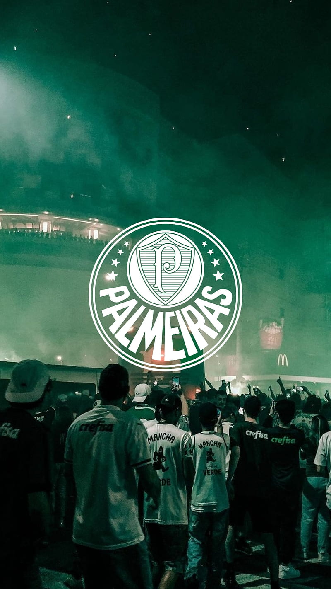

Explicar a emoção de ser palmeirense, a um palmeirense, é totalmente desnecessário. E a quem não é palmeirense, é simplesmente impossível!
A história do Palmeiras é um conto de luta, superação e paixão que ressoa nos corações de seus torcedores. Fundado em 1914, o clube atravessou períodos de glória e dificuldades, mas sua determinação nunca esmoreceu. Foi nos anos 90 que a equipe começou a brilhar com intensidade. Sob a liderança do icônico Luiz Felipe Scolari, Felipão, o Palmeiras conquistou títulos memoráveis, incluindo a Copa Rio e a Copa Mercosul, enchendo de orgulho a torcida alviverde. Os desafios e sucessos moldaram a identidade do clube, mas foi em 2020 que o Palmeiras atingiu o ápice moderno. Com a chegada do talentoso treinador português Abel Ferreira, o time reviveu sua paixão pelo futebol ofensivo e dinâmico. O ponto alto foi a conquista da Taça Libertadores da América, um feito emocionante que fez o coração de cada palmeirense vibrar de emoção. Além dos técnicos renomados, Leila Pereira emergiu como uma figura-chave na história recente do Palmeiras. Sua dedicação como patrocinadora e sua paixão inabalável pelo clube fortaleceram a equipe e proporcionaram recursos para o desenvolvimento contínuo. Leila personifica a união entre o amor pelo clube e o desejo de sucesso. Em 2023, o Palmeiras é um clube respeitado e temido, não apenas no Brasil, mas em toda a América do Sul. Sua jornada é uma narrativa de resiliência e triunfo, com Felipão, Abel Ferreira e Leila Pereira desempenhando papéis cruciais. Os torcedores palmeirenses continuam a acreditar em um futuro brilhante, sabendo que a história deste clube lendário está longe de ter seu último capítulo escrito.
Acesse o site oficial do Palmeiras. Saiba mais sobre o PalmeirasPalmeiras
O Palmeiras foi fundado em 26 de agosto de 1914 como Palestra Itália para ser o time da colônia italiana, muito forte em São Paulo no começo do século XX. Saiba 5 curiosidades sobre o time:
- O time nasceu da vontade de 3 jovens de criarem uma agremiação esportiva que representasse a comunidade italiana que vivia em São Paulo. Eles publicaram um convite no jornal para chamar outros interessados e, em 26 de agosto de 1914, fundaram o Palestra Itália, em uma reunião no centro da cidade.
- O nome do time precisou ser alterado durante a Segunda Guerra Mundial, já que o governo Getúlio Vargas proibiu o uso de nomes que tivessem alguma relação com Alemanha, Itália e Japão, países do Eixo. A primeira tentativa foi mudar para Palestra de São Paulo, mas as autoridades não ficaram satisfeitas e o argumento de que a palavra não era de origem italiana, mas grega, significando “academia ou escola onde se pratica atividades físicas”, não foi suficiente. A solução foi mudar para Sociedade Esportiva Palmeiras.
- Em 1918, durante a epidemia da Gripe Espanhola, o Palestra transformou suas instalações na Rua Líbero Badaró em um hospital para atuação da Cruz Vermelha no combate à doença. Com a ação generosa, o time conquistou o apoio popular e houve pressão para que o clube voltasse à Apea (Associação Paulista de Esportes Atléticos), da qual havia saído por se sentir perseguido pelos clubes de elite da cidade e pelos árbitros.
- O atual Allianz Parque, arena do Palmeiras inaugurada em 2014, foi construída sobre o antigo Parque Antártica, com parte da arquibancada original mantida. O estádio tem 42 mil lugares cobertos, anfiteatro para até 18 mil pessoas, centro de convenções, 160 camarotes, 6 lounges e estacionamento para mais de 2 mil veículos. O Palmeiras comprou aquele terreno em 1920, com ajuda da Companhia Matarazzo. A primeira reforma aconteceu em 1933, com a construção de uma arquibancada geral de concreto armado e da tribuna social para os associados do clube, e o estádio foi rebatizado de Stadium Palestra Itália, na época.
- Os adversários costumam fazer a provocação de que o Palmeiras não tem mundial. Isso porque o time não tem títulos da Copa do Mundo de Clubes da Fifa, que é realizada desde 2000, nem da Copa Intercontinental, disputada entre 1960 e 2004, considerada desde 2017 pela Fifa como título mundial. No entanto, o título mundial do Palmeiras vem da Copa Rio de 1951, reconhecida pela Fifa como o primeiro título mundial de clubes da história.
Principais títulos do Palmeiras
1 Copa Rio (Torneio Internacional de Clubes Campeões); 3 Conmebol Libertadores; 12 Campeonatos Brasileiros; 4 Copas do Brasil; 1 Copa dos Campeões; 1 Supercopa do Brasil; 25 Campeonatos Paulistas; 5 Torneios Rio-São Paulo.